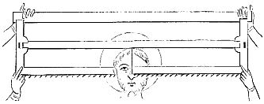
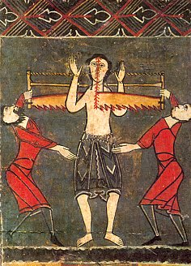

Dictionnaire raisonné du mobilier.
|
 Figure 1 |
 Martyre de Saint Cyr, devant de l'autel de Durro. Musée d'Art Catalan, Barcelonne. |
Je n'ai pas (encore...) retrouvé l'origine exacte de cette figure mais seulement une représentation similaire, sans doute plus tardive que l'époque carolingienne dont parle Viollet le Duc, mais qui a le mérite de préciser que la scène représente le martyre de Saint Cyr.
On peut noter au passage que Viollet le Duc use de l'adjectif carlovingien sous sa forme apparue au XVIIe siècle et remplacée, à partir du milieu du XIXe, par carolingien.
Sources : Art roman catalan, peintures sur bois, Juan Ainaud de Lasarte, Éditions Fernand Hazan, collection « petite encyclopédie de l'Art », n°66, Paris, 1965. Le petit Robert, Dictionnaire alphabétique de la langue Française, Paris, 1989.